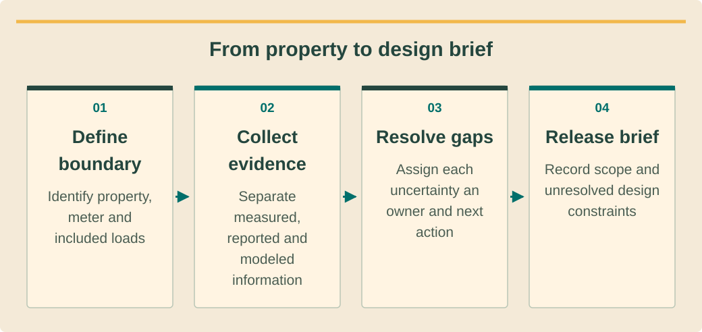

Design and permittingתכנון ורישויออกแบบและขออนุญาต · 1 / 9
Survey into a design briefמסקר שטח למסמך תכנוןจากสำรวจสู่ข้อกำหนดออกแบบ
Collect the evidence that changes a design before committing to equipment.אוספים לפני בחירת ציוד את הראיות שמשנות תכנון.เก็บหลักฐานที่มีผลต่อแบบก่อนตัดสินใจซื้ออุปกรณ์
What you will be able to doמה תדעו לעשותสิ่งที่คุณจะทำได้
- Distinguish measured, reported and assumed data.להבחין בין נתון מדוד, מדווח ומונח.แยกข้อมูลวัดจริง คำบอกเล่า และสมมติฐาน
- Build an interval-based load and operating brief.לבנות מסמך עומסים ותפעול לפי מרווחי זמן.จัดข้อกำหนดโหลดและการใช้งานตามช่วงเวลา
- Assign unresolved roof and electrical questions to qualified reviewers.להעביר סוגיות גג וחשמל פתוחות לבודקים מוסמכים.มอบประเด็นหลังคาและไฟฟ้าที่ยังไม่ชัดให้ผู้มีคุณสมบัติ
Start with the property boundaryמתחילים בגבולות הנכסเริ่มจากขอบเขตทรัพย์สิน
An island property can contain several meters, owners and operating businesses. Sketch the buildings, identify the actual PEA account and locate the proposed point of connection. A trading name on a booking website cannot establish the electricity customer or permission to alter a roof.בנכס באי עשויים להיות כמה מונים, בעלים ועסקים. שרטטו את המבנים, זהו את חשבון PEA האמיתי ואת נקודת החיבור המוצעת. שם מסחרי באתר הזמנות אינו מוכיח מי צרכן החשמל או למי מותר לשנות את הגג.ทรัพย์สินบนเกาะอาจมีหลายมิเตอร์ เจ้าของ และกิจการ วาดผังอาคาร ระบุบัญชี PEA จริงและจุดเชื่อมต่อที่เสนอ ชื่อรีสอร์ตบนเว็บจองห้องไม่ยืนยันผู้ใช้ไฟหรือสิทธิแก้ไขหลังคา
Record who grants survey access, who controls outages and who will receive the completed asset. Mark every observation with date, location and evidence. Keep personal account documents in the controlled project folder; the teaching or sales copy should contain only the minimum necessary information.תעדו מי מאשר כניסה לסקר, מי מתאם הפסקות חשמל ומי יקבל את המערכת. הצמידו לכל ממצא תאריך, מיקום וראיה. שמרו מסמכי חשבון אישיים בתיק מוגן; בחומר הדרכה או מכירה יופיע רק המידע ההכרחי.บันทึกผู้อนุญาตเข้าสำรวจ ผู้ควบคุมช่วงดับไฟ และผู้รับมอบ ระบุวันที่ ตำแหน่ง และหลักฐานของทุกข้อสังเกต เก็บเอกสารบัญชีส่วนบุคคลในแฟ้มควบคุม ใช้ข้อมูลเท่าที่จำเป็นในงานสอนหรือขาย
Read demand through timeקוראים עומס לאורך זמןอ่านความต้องการตามเวลา
Monthly bills establish an energy baseline but hide when demand occurs. Obtain interval data where available and reconcile it against billed periods. Log occupancy, kitchen shifts, pool pumps, air-conditioning and seasonal closures. A quiet survey afternoon is not evidence of the annual minimum or maximum demand.חשבונות חודשיים נותנים בסיס אנרגיה אך מסתירים את מועד הצריכה. השיגו נתוני מרווחים כשאפשר והתאימו אותם לתקופות החיוב. תעדו תפוסה, משמרות מטבח, משאבות בריכה, מיזוג וסגירות עונתיות. אחר צהריים שקט בסקר אינו מוכיח מינימום או מקסימום שנתי.บิลรายเดือนให้ฐานพลังงานแต่ไม่บอกเวลาใช้ ขอข้อมูลตามช่วงเวลาหากมีและเทียบรอบบิล บันทึกการเข้าพัก ครัว ปั๊มสระ เครื่องปรับอากาศ และช่วงปิดกิจการ บ่ายที่เงียบขณะสำรวจไม่ใช่ค่าสูงสุดหรือต่ำสุดทั้งปี
Separate the essential outage loads from flexible demand and from future additions. Ask how long a critical load must operate and whether starting current matters. Record an owner estimate as reported, not measured; add a measurement task when that uncertainty could change inverter or battery selection.הפרידו עומסי חירום חיוניים מעומס גמיש ומתוספות עתידיות. בררו כמה זמן עומס חיוני חייב לפעול והאם זרם התנעה משמעותי. סמנו הערכת בעלים כדיווח, לא כמדידה; הוסיפו משימת מדידה אם אי־הוודאות עשויה לשנות ממיר או סוללה.แยกโหลดจำเป็นเมื่อไฟดับ โหลดเลื่อนเวลาได้ และโหลดที่จะเพิ่ม ถามระยะเวลาที่ต้องจ่ายและกระแสเริ่มเดินเครื่อง ทำเครื่องหมายประมาณการเจ้าของว่าเป็นคำบอกเล่า พร้อมงานวัดเพิ่มเมื่ออาจเปลี่ยนขนาดอินเวอร์เตอร์หรือแบตเตอรี่
See the ideaרואים את הרעיוןมองเห็นแนวคิด
From property to design briefמהנכס למסמך דרישותจากอาคารสู่ข้อกำหนดออกแบบ

Read the diagram as textקריאת התרשים כטקסטอ่านแผนภาพเป็นข้อความ
- Define boundaryמגדירים גבולกำหนดขอบเขต — Identify property, meter and included loadsמזהים נכס, מונה וצרכנים כלוליםระบุอาคาร มิเตอร์ และโหลดที่รวม
- Collect evidenceאוספים ראיותเก็บหลักฐาน — Separate measured, reported and modeled informationמפרידים מדידה, דיווח ומודלแยกข้อมูลวัดจริง คำบอกเล่า และแบบจำลอง
- Resolve gapsסוגרים פעריםจัดการข้อมูลขาด — Assign each uncertainty an owner and next actionמצמידים לכל אי־ודאות אחראי ופעולהกำหนดผู้รับผิดชอบและงานถัดไปให้ข้อไม่แน่นอน
- Release briefמשחררים דרישותออกข้อกำหนด — Record scope and unresolved design constraintsמתעדים היקף ומגבלות תכנון פתוחותบันทึกขอบเขตและข้อจำกัดออกแบบที่ยังเปิด
Survey constraints without certifying themסוקרים אילוצים בלי להעניק אישורสำรวจข้อจำกัดโดยไม่รับรองเกินหน้าที่
Use photographs and accessible measurements to map roof zones, penetrations, drainage, nearby trees, corrosion and safe maintenance routes. Roof appearance is not a structural assessment. Refer uncertain supports, loading and wind resistance to the appropriate professional before fixing the array footprint or mounting system.השתמשו בצילום ובמדידות נגישות למיפוי אזורי גג, חדירות, ניקוז, עצים, קורוזיה ומסלולי תחזוקה בטוחים. מראה הגג אינו בדיקת קונסטרוקציה. העבירו תמיכות, עומסים ועמידות רוח לאיש המקצוע המתאים לפני קיבוע פריסת המערך או העיגון.ใช้ภาพและการวัดจากพื้นที่เข้าถึงได้ทำแผนที่หลังคา ช่องทะลุ ทางระบายน้ำ ต้นไม้ การกัดกร่อน และทางบำรุงรักษา สภาพที่มองเห็นไม่ใช่การประเมินโครงสร้าง ส่งประเด็นจุดรองรับ น้ำหนัก และแรงลมให้ผู้เชี่ยวชาญก่อนกำหนดผังและตัวยึด
Electrical observations must stay within the surveyor’s competence and approved safe access. A qualified person checks supply configuration, switchboard capacity, protection and earthing. Do not open energized equipment to complete a photograph checklist. An inaccessible item becomes an explicit hold point with an owner and a follow-up plan.תצפיות חשמל מוגבלות לכשירות הסוקר ולגישה בטוחה שאושרה. אדם מוסמך בודק תצורת הזנה, קיבולת לוח, הגנות והארקה. אין לפתוח ציוד חי כדי להשלים רשימת צילומים. פריט לא נגיש הופך לנקודת עצירה עם אחראי ותוכנית המשך.สังเกตระบบไฟเฉพาะขอบเขตความสามารถและการเข้าถึงที่อนุมัติ ผู้มีคุณสมบัติตรวจระบบจ่าย ขนาดตู้ การป้องกัน และสายดิน ห้ามเปิดอุปกรณ์มีไฟเพื่อให้ได้รูปครบ รายการเข้าไม่ถึงต้องเป็นจุดพักงานพร้อมผู้รับผิดชอบและแผนติดตาม
Turn observations into decisionsהופכים ממצאים להחלטותเปลี่ยนข้อสังเกตเป็นการตัดสินใจ
A usable brief links each constraint to its design consequence. “Trees nearby” is weak; “western row shaded after 15:00, measured on survey date, seasonal check required” is actionable. Record equipment space, access width, flood exposure, communications availability and the owner’s acceptable outage window.מסמך שימושי קושר כל אילוץ להשפעתו על התכנון. ״עצים סמוכים״ אינו מספיק; ״השורה המערבית מוצלת אחרי 15:00 בתאריך הסקר ונדרשת בדיקה עונתית״ מאפשר פעולה. תעדו מקום לציוד, רוחב גישה, הצפה, תקשורת וחלון השבתה מוסכם.ข้อกำหนดที่ใช้ได้เชื่อมข้อจำกัดกับผลต่อแบบ “มีต้นไม้” ยังไม่พอ ควรระบุแถวตะวันตกมีเงาหลัง 15:00 ในวันสำรวจและต้องตรวจฤดูกาล บันทึกพื้นที่อุปกรณ์ ความกว้างทางเข้า น้ำท่วม สัญญาณสื่อสาร และช่วงดับไฟที่ยอมรับได้
Close the survey by reviewing missing evidence with the client and design supervisor. Every assumption needs a consequence if wrong and a deadline for confirmation. Release preliminary modelling only when its limits are visible; reserve final design approval until material uncertainties have been resolved by responsible people.בסיום הסקר סקרו את הראיות החסרות עם הלקוח והמפקח על התכנון. לכל הנחה הגדירו מה יקרה אם תופר ומועד אימות. שחררו מודל ראשוני רק כשגבולותיו גלויים; אישור תכנון סופי ימתין לפתרון אי־ודאויות מהותיות בידי בעלי האחריות.ปิดการสำรวจด้วยการทบทวนหลักฐานขาดกับลูกค้าและผู้กำกับแบบ ทุกสมมติฐานต้องมีผลกระทบหากผิดและวันยืนยัน อนุญาตแบบจำลองเบื้องต้นเมื่อข้อจำกัดชัดเจน ส่วนแบบสุดท้ายต้องรอผู้รับผิดชอบแก้ประเด็นสำคัญ
Worked exampleדוגמה פתורהตัวอย่างพร้อมวิธีทำ
A café with a villa behind itבית קפה עם וילה מאחוריוคาเฟ่กับวิลลาด้านหลัง
Training assumptions: one café meter records 60 kWh/day; 36 kWh occurs during a defined solar window. A separate villa meter and an unverified roof extension are on the same plot.הנחות לתרגול: מונה בית קפה רושם 60 קוט״ש ליום, מהם 36 בחלון שמש מוגדר. באותה חלקה יש מונה וילה נפרד ותוספת גג שלא נבדקה.สมมติฝึก: มิเตอร์คาเฟ่ใช้ 60 kWh/วัน โดย 36 kWh อยู่ในช่วงแสงอาทิตย์ที่กำหนด มีมิเตอร์วิลลาแยกและหลังคาต่อเติมยังไม่ตรวจในแปลงเดียวกัน
- Calculate the café’s daytime fraction: 36 ÷ 60 = 60%; retain the interval profile for self-use modelling.חשבו שיעור צריכה בחלון היום: 36 ÷ 60 = 60%; שמרו את פרופיל המרווחים למודל שימוש עצמי.คำนวณสัดส่วนช่วงกลางวัน 36 ÷ 60 = 60% และเก็บรูปโหลดเพื่อจำลองใช้เอง
- Keep the villa outside the café electrical boundary until an approved configuration establishes otherwise.השאירו את הווילה מחוץ לגבול החשמלי של בית הקפה עד שתצורה מאושרת תקבע אחרת.แยกวิลลาออกจากขอบเขตไฟฟ้าคาเฟ่จนกว่าจะมีแบบที่อนุมัติเป็นอย่างอื่น
- Mark the extension unavailable for final layout pending structural review and owner authority.סמנו את התוספת כלא זמינה לפריסה סופית עד בדיקת מבנה והרשאת בעלים.ระบุหลังคาต่อเติมว่ายังใช้วางแบบสุดท้ายไม่ได้จนตรวจโครงสร้างและสิทธิเจ้าของ
The brief supports a bounded café concept. It does not claim that all daytime energy will be covered or that neighboring meters can share generation.המסמך תומך בקונספט מוגדר לבית הקפה, בלי לטעון לכיסוי כל צריכת היום או לשיתוף ייצור בין מונים סמוכים.ข้อกำหนดรองรับแนวคิดเฉพาะคาเฟ่ ไม่อ้างว่าครอบคลุมพลังงานกลางวันทั้งหมดหรือแบ่งไฟข้ามมิเตอร์ได้
Your turnעכשיו מתרגליםถึงเวลาฝึกฝน
Build a gap registerבונים רישום פעריםจัดทะเบียนข้อมูลขาด
For an invented six-room guesthouse, you have two bills, roof photos and a claim that refrigerators use 4 kWh each day. Design a follow-up survey that resolves the three uncertainties most likely to change the proposal.לגסטהאוס מדומה עם שישה חדרים יש שני חשבונות, תמונות גג וטענה שמקררים צורכים 4 קוט״ש ביום. תכננו סקר המשך לפתרון שלוש אי־הוודאויות שישפיעו ביותר על ההצעה.เกสต์เฮาส์สมมติหกห้องมีบิลสองใบ รูปหลังคา และคำบอกว่าตู้เย็นใช้ 4 kWh/วัน วางสำรวจติดตามเพื่อแก้สามข้อที่น่าจะเปลี่ยนข้อเสนอมากที่สุด
- A three-row evidence, owner and deadline register.רישום שלוש שורות עם ראיה, אחראי ומועד.ตารางสามรายการระบุหลักฐาน ผู้รับผิดชอบ และวันครบกำหนด
- A preliminary scope statement with visible exclusions.הגדרת היקף ראשונית והחרגות גלויות.ขอบเขตเบื้องต้นพร้อมสิ่งที่ยังไม่รวม
Compare with the model answerהשוו לפתרון לדוגמהเปรียบเทียบกับแนวคำตอบ
Request representative interval load and seasonal occupancy; have a qualified reviewer assess roof suitability; verify account, meter and owner authority. Mark refrigerator consumption as reported until measured. Exclude guaranteed backup duration and final roof layout until their evidence exists.בקשו עומס מרווחים ותפוסה עונתית מייצגים; העבירו התאמת גג לבודק מוסמך; אמתו חשבון, מונה והרשאת בעלים. צריכת המקרר תסומן כדיווח עד מדידה. החריגו משך גיבוי מובטח ופריסת גג סופית עד קבלת ראיות.ขอโหลดช่วงเวลาที่เป็นตัวแทนและการเข้าพักตามฤดูกาล ให้ผู้มีคุณสมบัติตรวจหลังคา และยืนยันบัญชี มิเตอร์ สิทธิเจ้าของ ระบุการใช้ตู้เย็นเป็นคำบอกเล่าจนวัดจริง ยังไม่รับประกันเวลากำลังสำรองหรือแบบหลังคาสุดท้าย
Your exercise notebookמחברת התרגול שלכםสมุดแบบฝึกหัดของคุณ
Write your reasoning and the evidence you would collect. Notes stay in this browser. Export a copy to share with your trainer.כתבו את דרך החשיבה ואת הראיות שתאספו. המחברת נשמרת בדפדפן הזה. הורידו עותק כדי להעביר לבדיקה של אחראי ההדרכה.เขียนเหตุผลและหลักฐานที่จะรวบรวม บันทึกเก็บในเบราว์เซอร์นี้ ส่งออกสำเนาเพื่อส่งให้ผู้ฝึกสอนตรวจ
Before handing overלפני שמעבירים הלאהก่อนส่งมอบงาน
- Every photograph has location and date; every number has a unit and provenance.לכל תמונה מיקום ותאריך; לכל מספר יחידה ומקור.ทุกรูปมีจุดและวันที่ ทุกตัวเลขมีหน่วยและที่มา
- Meter boundaries and essential loads are distinct.גבולות מונים ועומסים חיוניים מובחנים.แยกขอบเขตมิเตอร์และโหลดจำเป็น
- Unsafe or inaccessible observations become controlled follow-ups.תצפיות מסוכנות או לא נגישות הופכות למשימות המשך מבוקרות.ข้อมูลที่เสี่ยงหรือเข้าไม่ถึงมีงานติดตามควบคุม
Watch and applyצופים ומיישמיםดูแล้วนำไปใช้
A professional demonstrationהדגמה מקצועיתการสาธิตจากผู้เชี่ยวชาญ
Before pressing playלפני שמפעיליםก่อนกดเล่น
Notice that the tutorial obtains a modeled load profile. Identify which property measurements would be needed to challenge that profile.שימו לב שההדגמה מורידה פרופיל צריכה מחושב. זהו אילו מדידות בנכס יאפשרו לבחון אותו.สังเกตว่าบทสาธิตดาวน์โหลดโปรไฟล์โหลดจำลอง ระบุข้อมูลวัดของอาคารที่ต้องใช้ตรวจสอบโปรไฟล์นั้น
Download Modeled Load Data
Official SAM demonstration of obtaining modeled load data. English speech; modeled profiles require comparison with the actual property.הדגמה רשמית של SAM להורדת נתוני צריכה ממודל. הדיבור באנגלית; יש להשוות פרופיל מחושב לנתוני הנכס בפועל.การสาธิตอย่างเป็นทางการของ SAM เรื่องการดาวน์โหลดข้อมูลโหลดจากแบบจำลอง เสียงภาษาอังกฤษ ต้องเทียบโปรไฟล์จำลองกับข้อมูลจริงของอาคาร
Connect it to this lessonמחברים לחומר בשיעורเชื่อมกับบทเรียนนี้
A plausible profile is an explicit assumption until site evidence supports it.פרופיל סביר הוא הנחה מפורשת עד שראיות מהאתר תומכות בו.โปรไฟล์ที่ดูสมเหตุผลยังเป็นสมมติฐานจนมีข้อมูลหน้างานสนับสนุน
Pause and explainעוצרים ומסביריםหยุดแล้วอธิบาย
Which source label would you attach to this profile in the survey register?איזה סיווג מקור תצמידו לפרופיל הזה ביומן הסקר?คุณจะติดป้ายประเภทแหล่งข้อมูลใดให้โปรไฟล์นี้ในทะเบียนสำรวจ?
The guidance is available in all three languages. The video keeps the publisher’s original audio; captions and translations depend on the publisher and YouTube. If the embedded player is unavailable, use the source link.הנחיות הצפייה זמינות בשלוש השפות. הסרטון נשאר בשפת המקור; כתוביות ותרגום תלויים במפרסם וב־YouTube. אם הנגן אינו זמין, פתחו את קישור המקור.คำแนะนำมีครบสามภาษา วิดีโอใช้เสียงต้นฉบับ คำบรรยายและการแปลขึ้นกับผู้เผยแพร่และ YouTube หากเครื่องเล่นใช้ไม่ได้ให้เปิดลิงก์ต้นฉบับ
Check your understanding · 80% to passבדיקת הבנה · ציון מעבר 80%ตรวจความเข้าใจ · ผ่านที่ 80%
Sources and review datesמקורות ותאריכי בדיקהแหล่งข้อมูลและวันที่ตรวจสอบ
- PEA electricity reliability: Samui, Phangan and Tao
Establishes PEA island context; does not approve a property connection.מבסס את הקשר האיים ל־PEA; אינו אישור חיבור לנכס.ยืนยันบริบทพื้นที่เกาะของ PEA ไม่ใช่การอนุมัติเชื่อมต่อของโครงการ
- Solar Rooftop residential purchase program 2569
Conditional Type 1 residential program; eligibility, allocation and contract remain separate from technical connection.תוכנית מותנית לצרכן ביתי מסוג 1; זכאות, הקצאה וחוזה נפרדים מחיבור טכני.โครงการบ้านอยู่อาศัยประเภท 1 แบบมีเงื่อนไข คุณสมบัติ โควตา และสัญญาแยกจากการเชื่อมต่อทางเทคนิค
- SAM PVWatts: System Design
DC capacity, orientation, losses and array assumptions; record and challenge model assumptions.הספק DC, כיוון, הפסדים והנחות מערך; לתעד ולבחון הנחות מודל.กำลัง DC ทิศทาง การสูญเสีย และสมมติฐานแผง ต้องบันทึกและทบทวน
- Professional engineering license verification
Verify person, discipline, level, validity and relevant scope; course completion is not a professional license.אימות אדם, תחום, דרגה, תוקף וסמכות רלוונטית; סיום קורס אינו רישיון מקצועי.ตรวจบุคคล สาขา ระดับ อายุใบอนุญาต และขอบเขตงาน การจบหลักสูตรไม่ใช่ใบอนุญาตวิชาชีพ
- กฎกระทรวงความปลอดภัยในการทำงานเกี่ยวกับไฟฟ้า พ.ศ. 2558
Employer electrical-work safety duties; select current training and qualified supervision. This training does not authorize electrical work.חובות מעסיק בבטיחות חשמל, הכשרה עדכנית ופיקוח מוסמך. קורס זה אינו מסמיך לעבודות חשמל.หน้าที่นายจ้างด้านความปลอดภัยไฟฟ้า การฝึกอบรมและกำกับโดยผู้มีคุณสมบัติ หลักสูตรนี้ไม่อนุญาตให้ทำงานไฟฟ้า
- Solar Rooftop standards and safety advice
Equipment/model verification, professional drawings, connection, testing and clear warranty.אימות ציוד ודגם, תוכניות מקצועיות, חיבור, בדיקות ואחריות ברורה.ตรวจสอบอุปกรณ์และรุ่น แบบวิศวกร การเชื่อมต่อ การทดสอบ และการรับประกันชัดเจน
Reading and quizzes build knowledge. Field work and practical sign-off require the responsible qualified professional.קריאה וחידונים בונים ידע. עבודת שטח ואישור כשירות מעשית נעשים בהנחיית בעל המקצוע המוסמך והאחראי.การอ่านและแบบทดสอบสร้างความรู้ งานภาคสนามและการรับรองความสามารถปฏิบัติต้องอยู่ภายใต้ผู้เชี่ยวชาญที่มีคุณสมบัติและรับผิดชอบ